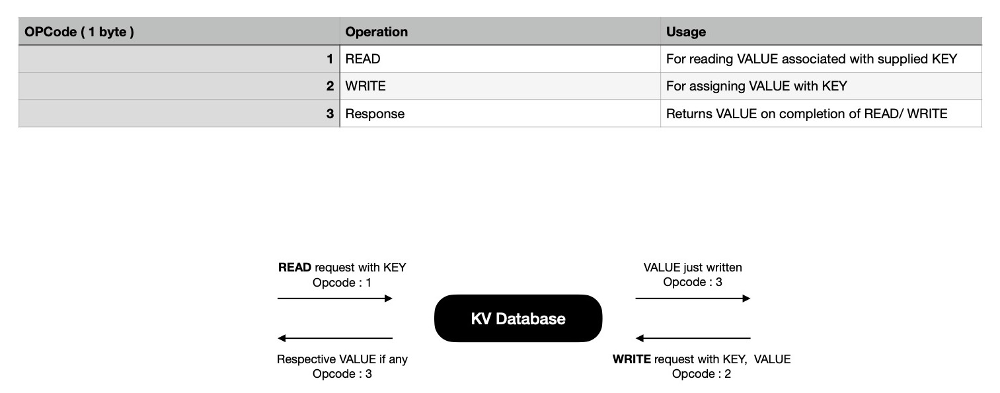
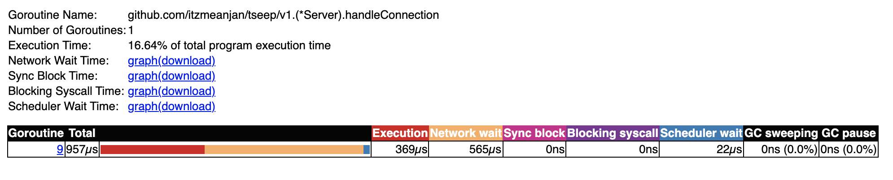
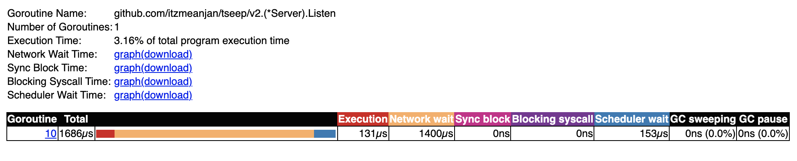
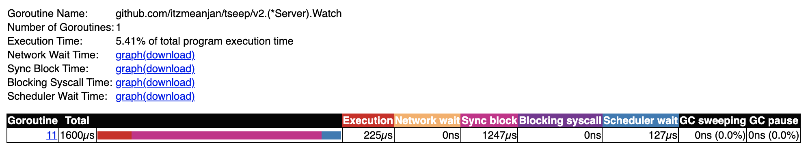
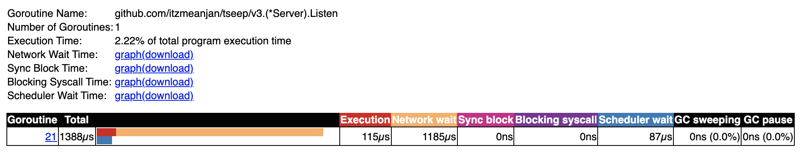
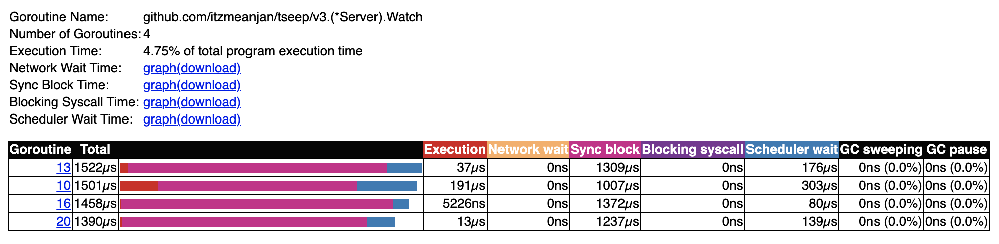

For last few months I've been working at TCP level more often than I generally do. During this period I designed and implemented few systems where multiple participants talk to each other over TCP while following custom application level protocol. I learned the way most of TCP applications written in ( specifically ) Golang can be done in a slight different way so that applications don't end up spawning one go-routine per accepted connection --- resulting into thousands of active go-routines when talking to thousands of concurrent peers. Rather than handling each peer in its own go-routine, proactively attempting to read from socket & spending most of its time in blocked mode; keeping only one socket watcher go-routine which is responsible for informing any READ/ WRITE completion event happening on any of delegated sockets --- consumes way lesser resources. It excels at reducing scope of context switching by bringing possible go-routine count to minimal. As a result of it, Golang scheduler only needs to manage a few go-routines now. Previously scheduler had to orchestrate thousands of go-routines on N system threads. I ran some experiments and result was promising --- TCP servers able to easily handle 100k concurrent connections when following second approach.
Following 3 different approaches, I develop key-value database where clients can send read/ write requests over TCP. I challenge each implementation with 100k concurrent connections and collect statistics of their performance, resource consumption etc. under high load; all running on a consumer-grade GNU/Linux machine in containerised environment i.e. Docker.
The application I develop is quite simple but it captures the essence of a TCP application. It's a remote ( not necessarily geographically ) in-memory KV database, to which clients connect over TCP & maintain that connection throughout their life time. During their life time they do any of two possible operations in a randomised manner.
In both of the cases clients expect to hear back from server. In response frame VALUE associated with KEY is returned. For WRITE request, VALUE in response frame must be equal to what's sent in request frame. On server side all reading/ writing is done in concurrent safe manner --- by acquiring mutex locks. Only for write request r/w lock is held i.e. critical section of code, otherwise normal read-only lock is held --- allowing fulfilment of multiple READ requests concurrently.

For performing desired operations, clients send structured data frames
over TCP; server extracts that out from socket; performs action as specified
in message envelope i.e. opcode field; responds back with response frame.
Each message sent over wire is two-parts, where envelope carries operation kind i.e. {READ, WRITE} &
how many more bytes server need to be read from stream to construct a structured message. Clients
always expect to receive only one kind of frame in response.
For a READ frame, sent when client is interested in looking up VALUE associated
with KEY, body just holds key, preceded with key length in 1 byte field. Notice, body length
field in envelope is 2 bytes, allowing at max 65535 bytes of body, but in body actually
256 bytes can be written due to key length field in body being of 1 byte. This is done intensionally
for keeping illustration simple.
Practically max READ frame size over wire will be
| Field | Max Thoeretical Size ( in bytes ) | Max Practical Size ( in bytes ) |
|---|---|---|
| Envelope | 3 | 3 |
| Body | 65535 | 256 |
| Total | 65538 | 259 |
WRITE frame carries little more data, which is sent when client is interested
in associating VALUE with some KEY, because it carries both key, value & each of them are preceded
with respective length in 1 byte field. Same scene here, practically WRITE frame's body will be at max 512 bytes
though it's allowed to be at max 65535 bytes theoretically, as written in body length field in stream.
Limits WRITE frame size will be
| Field | Max Thoeretical Size ( in bytes ) | Max Practical Size ( in bytes ) |
|---|---|---|
| Envelope | 3 | 3 |
| Body | 65535 | 512 |
| Total | 65538 | 515 |
In response of READ/ WRITE request client expects to receive one RESPONSE frame, where VALUE associated with KEY is encoded, where length of VALUE precedes it, encoded 1 byte --- signaling client how many more bytes to read from stream to construct response. Good thing about response frame, it doesn't waste any space, just allows sending 255 bytes VALUE at max.
| Field | Max Theoretical Size ( in bytes ) | Max Practical Size ( in bytes ) |
|---|---|---|
| Envelope | 2 | 2 |
| Body | 255 | 255 |
| Total | 257 | 257 |
Now I'd like to spend some time in specifying how each of 3 approaches work.
For ease of addressing, I'll refer to them from now on as {v1 => 1, v2 => 2, v3 => 3}.
Model v1 is popular way of writing TCP servers in Go, where one listener go-routine
keep listening on a host:port; accepts connection & spawns new go-routine for handling
connection throughout its life time. This model respects seperation of concern well & operations
happening on socket are easier to reason about due to clean structure. But one thing to notice, each go-routine
alive for handling concurrent connections, spends a lot of its time in blocked state --- proactively waiting to read
from socket.
Model v2 is slightly different than v1, where rather than spawning
one go-routine per accepted connection, all accepted connections are delegated to
one watcher go-routine, which runs one kernel event loop and learns about READ/ WRITE
completion events on sockets being watched. Every now and then event loop informs
watcher go-routine of READ/ WRITE completion events, providing with opportunity to
take action on accomplished task and schedule next operation on socket asynchronously.
This mode of operation has some similarity with libuv --- which powers NodeJS's event loop.
I'd call model v3 a generic version of model v2, where N-watcher go-routines
run N-many kernel event loops and each accepted connection is delegated to one of these
available watchers for rest of their life time. Whenever READ/ WRITE completion event ocurrs on
some socket, event loop notifies respective watcher go-routine, which invokes handle{READ,WRITE} method
to take action on completed event and schedule next operation on socket, to be completed asynchronously.
Using this model calls for socket orchestrating technique --- connections are fairly
distributed among all available watcher go-routines. Goal of orchestration is not creating hot-spots i.e.
some watcher go-routine managing lots of sockets while some has got few. This defeats whole purpose
of model v3. One naive orchestration technique will be using modular arithmetic, where
M-th accepted connection is delegated to M % N -th watcher go-routine, where M > 0, N > 0, N = #-of watcher go-routines.
One problem I see with this scheme is, assuming peer connections are generally long-lived
some watcher might end-up managing all those long-lived peers while some other watcher go-routine
probably received those sockets which were unfortunately not long-lived, will manage few sockets --- creating
imbalance in socket watching delegation i.e. hotspot resulting into bad performance.
What I think can be done, rather than blindly orchestrating sockets using naive round-robin technique,
better to keep one feedback loop from watcher go-routines, so that they can inform
listener go-routine of their current status i.e. how many delegated sockets are they managing
now ?, how many of them are active in terms of READ/ WRITE operation frequency --- rolling average
over finite timespan ? etc., allowing listener go-routine to make more informed decision before it
delegates accepted connection to some watcher. This brings in management flexibility.
It's time to run these models on real mahine and collect statistics. I've prepared parallel
benchmarking testcases, where in each round of benchmarking one client connects to TCP server
and sends two frames in order. First frame is read request for some KEY, waits for response, consumes
it ( if some other client has already set VALUE for that KEY ); then it sends write request
with a KEY, VALUE pair, waits for response, expecting to see VALUE in response matching what it sent
in write request. Each benchmark is performed 8 times, to get average statistics.
I do parallel benchmark of model v1 on two machines running GNU/Linux & MacOS
where for each round takes ~34k ns on GNU/Linux, but it's relatively on higher side
when run on MacOS ~45k ns.
For model v2, MacOS takes lesser time for each round than it took in model v1. But that's not true for GNU/Linux --- rather it almost doubled up.
In case of model v3, GNU/Linux and MacOS both of them has kept their trends intact --- for one average benchmark round completion timespan increases, for other it's decreasing, respectively.
Now I plan to stress test 3 models on both of GNU/Linux & MacOS platform with 8k
concurrent connections, where each client connects to TCP server, sends
read & write requests in order while waiting for their response
in both of the cases.
When model v1 is stress tested, it completes lot faster on GNU/Linux, given
it enjoys benefit of faster CPU.
With 8k concurrent connections model v2 takes almost same time to complete on both GNU/Linux & MacOS platform.
Time required for completing stress testing with model v3 is almost unchanged for MacOS, but for GNU/Linux it's slightly increasing.
Go's trace tool is helpful in getting deeper insight into what happened
when program was running. So I collect program execution trace when running
program testing. These are collected from MacOS machine.
While looking for how major go-routines spent their time model v1,
I found listener go-routine which accepts connections and spawns new go-routine
for handling it, spends a major portion of time in blocked state --- which is understandable
because it's waiting for new connection to arrive.
If I now look at how its spawned connection handler go-routine spent its time, I see it has also spent most of its time in waiting for network IO. This also makes sense given the fact, in model v1 each connection is handled in its own go-routine, resulting into each of those go-routines proactively waiting to read from socket --- waiting for network IO event.
I look at model v2's execution trace. It has two major go-routines i.e. {listener, watcher}. Listener does same job in all 3 models --- wait for incoming connection; accept it; prepare connection handling phase ( different in each model ); keep looping, which is why network IO based blocking is evident in its trace.
When I look at model v2's watcher go-routine trace, it doesn't spend any time in waiting for network IO --- it makes a blocking call where it waits for accumulation of a few READ/ WRITE completion event from underlying kernel event loop, as soon as it's done, it starts looping over them and takes necessary actions. This single function is equivalent of what N-many handleConnection go-routine does in model v1. When scheduler wait column is checked in each of these traces, it's well understandable each go-routine spawned needs to be scheduled on underlying OS threads to actually run, and scheduling is not cheap when having 100k go-routines.
At last I take a look at trace of model v3, where I run 4 watcher go-routines each managing a subset of accepted connections. Listener go-routine's trace is similar to what I found in other models.
Downside of having more go-routines is scheduling cost --- here I run 4 go-routines with 4 different kernel event loop, subset of sockets are delegated to them, resulting into spending more time in scheduler wait stage. Also notice though there're 4 watcher go-routines ready to do their job, not all being used. It's because of the fact during test, when trace is collected, only one connection request is sent from client side, resulting into only one socket being managed by one of available watcher go-routines.
